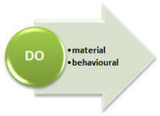

Verbal processes
 |
The verb is "Our most powerful impression of experience"
|
This guide is concerned with what are called main or lexical verbs in English, not auxiliary or modal auxiliary verbs of any sort. There are guides elsewhere to those verbs (links at the end).
In primary schools the world over, verbs are called 'doing words'.
Among much else taught in schools, however, that's only partly right.
What follows here is a brief summary of verbs (better, clauses) seen
from the perspective of functional grammar. In other words, we are
concerned with what they do rather than their grammatical
characteristics.
 |
Verbs as processes |
Verbs do all kinds of things in language. They say what's
happening, how things are related to each other, what the situation is like, how people feel, what they say,
what they think and so on.
Here are some examples
- That dog's barking (what's happening)
- That cat belongs to her (how she and that cat are related)
- The weather is awfully wet (what the situation is)
- I feel ill (how someone feels)
- I told him to go home (what someone said)
- Mary enjoyed the film (what someone thought)
If you have followed
the guide to stative and dynamic verb use, linked in the list of related
guides at the end, you will
already be aware that the meaning a verb conveys affects the
construction of the clause it's in. For example,
Be quiet, I'm thinking
vs.:
I think it's noisy in here
The fact that we can't use the progressive aspect in the second example
but we can in the first is because the verb is being used to express a
different kind of process. It is not a mystery of stative and
dynamic verbs.
It is in the effort to make sense of the things verbs do and the
meanings they convey that functional linguists have developed an
analysis which focuses on the process (i.e., function) rather than the
structure.
 |
The three essential types |
Before we go on, can you divide the following nine
clauses into three types? Just jot down three headings and then
put the numbers of the examples under each. To make things
slightly easier, there are three in each section.
Click here when you have done that.
| 1 | They have arrived | 4 | There's a bus stop at the corner | 7 | They remembered meeting me |
| 2 | I thought he was a bit dim | 5 | She sneezed | 8 | The bridge collapsed |
| 3 | She said goodbye | 6 | I'm the boss | 9 | The office lies on the left |
Here's the answer. Don't worry if you didn't get the same categories. If you have a logical way of dividing them up, it means you are thinking along the right lines.
| doing verbs | thinking / feeling / saying verbs | being verbs |
| They have arrived | I thought he was a bit dim | There's a bus stop at the corner |
| She sneezed | She said goodbye | I'm the boss |
| The bridge collapsed | They remembered meeting me | The office lies on the left |
The categories appear a bit babyish and we can't have that so the real titles for the columns are as this table shows. The meanings are, however, the same.
| material and behavioural processes | projecting (mental and verbal) processes | existential and relational processes |
| They have arrived | I thought he was a bit dim | There's a bus stop at the corner |
| She sneezed | She said goodbye | I'm the boss |
| The bridge collapsed | They remembered meeting me | The office lies on the left |
As you can see, the categories can each be subdivided into two areas. We'll take them one by one.
|  |
doing verbs |
In less strict (and, arguably, accurate) analyses, these are called action verbs. That's right as far as it goes but it doesn't go very far.
- MATERIAL processes
- These include verbs such as the ones in these examples:
the machine works well
the string broke
the bomb exploded
the house fell down
They are to do with what happens in the external, material world of our experience. - BEHAVIOURAL processes
- These include verbs such as the ones in these examples:
they imagined being on TV
she sang in church
I sneezed constantly
I worried half to death
These verbs refer to psychological or physical behaviour.
thinking, feeling, saying verbs (projecting verbs) |
- MENTAL processes
- These include verbs such as the ones in these examples:
I enjoyed the film
she noticed his nervousness
I remembered his face
they hated the place
The verbs refer to thinking, wanting, perceiving and emoting. - VERBAL processes
- These include verbs such as the ones in these examples:
he told me what to do
I said I was angry
they explained the problem
they asked to be allowed to go
These verbs refer to putting thoughts (mental processes) into words.
 |
being verbs |
- EXISTENTIAL processes
- These include verbs such as the ones in these examples:
there are no cigarettes left
there were some potatoes in the cupboard
there's nothing to be said
unicorns don't exist
is there anything more to say?
These verbs almost always come with the word 'there' and refer to whether something exists or not (hence the name) - RELATIONAL processes
- These include verbs such as the ones in these examples:
the office is down the hall
this tastes of garlic
it feels rough
we were in Paris
These verbs express the relationship between two entities (called participants, in the trade) and refer to something's attributes (where, when etc.) and to its identity, either of a class:
It's a language book
or specifically:
It's called "How to teach"
In fact, the process is often subdivided in relational attributive and relational identifying processes. The first refers to what something is like and the second to what, when or where something is.
A more traditional view is to analyse the verbs here as copulae.
Here's a small cut-out-and-keep summary of the 6 main
types of verbal process with examples of each.

Now we can return to our initial examples and be a little more precise.
Look again at the examples and see if you can identify which is which in each category:
| material and behavioural processes | projecting (mental and verbal) processes | existential and relational processes |
| They have arrived | I thought he was a bit dim | There's a bus stop at the corner |
| She sneezed | She said goodbye | I'm the boss |
| The bridge collapsed | They remembered meeting me | The office lies on the left |
Click here when you have done that.
Here's the full list with some more examples:
| material and behavioural processes | |
| They have arrived | material processes happening in the world |
| The bridge collapsed | |
| She sneezed | both behavioural processes |
| They are arriving at 7 | |
| projecting (mental and verbal) processes | |
| I thought he was a bit dim |
mental processes: either could be converted to verbal processes by changing it to direct speech as in: I said I thought he was a bit dim They told me they remembered meeting me |
| They remembered meeting me | |
| She said goodbye | a verbal process |
| existential and relational processes | |
| There's a bus stop at the corner | both existential processes |
| There's no milk in the fridge | |
| I'm the boss | these are both
relational processes: the first identifies 'I' as the boss the second and third tell us about an attribute of the office |
| The office is shut at 6 | |
| The office lies on the left | |
Before we go on, take a short test in this area to see if you can remember the essential types of process and match them to examples.
 |
So what? |
How does this way of looking at verbs help me to teach them and help my learners to use them and understand them?
- It makes it easier for learners to find out how to use verbs
especially in the area of transitivity and qualification. It
also helps in a number of other areas. You could help them
notice, e.g., that MENTAL process
verbs are often followed by the -ing form, e.g.:
I considered going home
They disliked doing the work
etc.
Other areas are also made easier to grasp by this categorisation:- Stative vs. dynamic uses:
believe is a MENTAL process so is unlikely to be used in the progressive but MATERIAL and BEHAVIOURAL processes are often used that way.
hence, we generally prefer
I believe he's coming
She understands my point of view
etc. to
*I am believing he's coming
*She is understanding my point of view
because these examples refer to MENTAL processes.
However, we do use progressive aspect forms with BEHAVIOURAL and MATERIAL processes as in:
The ladder is shaking
He's driving tomorrow
We are running out of beer
especially if we are concerned to emphasise the continuous or progressive nature of the event or action.
If a verb which is normally a mental process verb, such as feel or think is used behaviourally, it can be used in a progressive form so we have contrasts, for example, between:
I feel that's a mistake (mental process)
I'm feeling a bit sick (behavioural process)
I think that's the man (mental process)
I'm thinking about going to America (behavioural process) - VERBAL processes can be better understood as making the internal
MENTAL processes external in some way. This helps with the
natural production of indirect speech forms.
For example,
I want her to come (a mental process)
can be externalised as
I tried to persuade her to come (a verbal process) - Verbs which vary their meaning can be more easily understood
with a grasp of process types:
He felt the surface of the carving (BEHAVIOURAL)
He felt ill (BEHAVIOURAL)
He felt the play was very poor (MENTAL)
In these examples, you will see that the last is the only one which cannot be used dynamically so:
*He was feeling the play was very poor
is not available because the verb is a mental process.
- Stative vs. dynamic uses:
- It is especially important for anyone who is taking a genre
approach to teaching. If you have done
the guide to genre and/or the guide
to circumstances, both linked below, this will be familiar territory.
Once we have a grasp of the concept of verbs as processes, we can begin to predict the sorts of ones we will need to understand and deploy to match the text type we are writing, speaking, hearing or reading. Here are some examples:- In a text whose purpose is a narrative, such as telling an
anecdote, we need to deploy and understand MATERIAL:
the bus crashed
BEHAVIOURAL:
the passengers screamed
and VERBAL:
the police officer suggested
processes because texts of this sort are used to describe what happened, what people did and what they said about it. - In a text whose purpose is a to explain a procedure, such as
a recipe or experiment, MATERIAL and BEHAVIOURAL processes will again be important
heat the water
the product of the reaction combines with ...
but we also need RELATIONAL ATTRIBUTIVE processes
the mix is placed in a furnace
the beans are flavoured with salt and garlic.
We are unlikely to deploy VERBAL or MENTAL processes in text types like this because what people say or think is not relevant. In fact, the use of verbal or mental process verbs is often out of place and stylistically inappropriate in such texts where e.g.:
We thought the reaction was proceeding quickly
would be a jarring insertion. - In a text whose purpose is a discussion (arguing both sides
of an issue), such as an academic
essay, processes are very important. They are often:
MATERIAL:
cars produce pollutants
EXISTENTIAL:
there is an increasing number of cars on our roads
and RELATIONAL:
many families now have two or more cars.
However, if the text is an exposition (arguing a point of view) then MENTAL and BEHAVIOURAL process verbs will be needed:
I believe
I often notice
etc.
If there is a need to focus on people in the text, we will deploy BEHAVIOURAL:
people use cars too often to get to work
and MENTAL:
people do not understand how damaging ...
process verbs.
- In a text whose purpose is a narrative, such as telling an
anecdote, we need to deploy and understand MATERIAL:
The second point is important because instead of simply
practising producing or understanding the text types, we can prepare our
learners by teaching them how to
use the various verb types (see point 1).
There's little point in asking learners to produce narrative until they
have at least some grasp of how to use MATERIAL and BEHAVIOURAL verbal
processes.
You can't properly
understand a discussion or appreciate the writer's point of view unless you can decode
the language that betrays MENTAL process rather than objective MATERIAL
process.
There is no test on this; you have done enough.
| Related guides | |
| circumstances | for a functional way of seeing adverbials and prepositional phrases |
| genre | for a way to consider text typing and more |
| circumstances | for a functional way to look at what are sometimes called adverbials |
| stative and dynamic verb use | which considers verb meaning and how it affects tense form |
| modality | for the index to this area which will lead you to modal auxiliary verbs and much else |
| primary auxiliary verbs | which will take you to a guide to another type of verb altogether |
| verb types and clause structures | for a guide to the six main sentence structures in English |
References:
Butt, D, Fahey, R,
Feez, S, Spinks, S and Yallop, C, 2001, Using Functional
Grammar: an explorer's guide. Sydney: NCELTR
Halliday, M, 1994, An introduction to functional grammar: 2nd
edition. London: Edward Arnold